Polymaps is a free JavaScript library for making dynamic, interactive maps in modern web browsers.
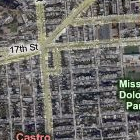

 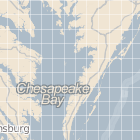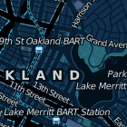
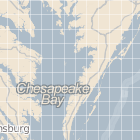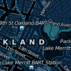 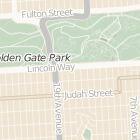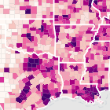
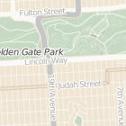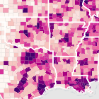 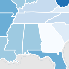
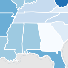


Polymaps provides speedy display of multi-zoom datasets over maps, and supports a variety of visual presentations for tiled vector data, in addition to the usual cartography from OpenStreetMap, CloudMade, Bing, and other providers of image-based web maps.
Because Polymaps can load data at a full range of scales, it’s ideal for showing information from country level on down to states, cities, neighborhoods, and individual streets. Because Polymaps uses SVG (Scalable Vector Graphics) to display information, you can use familiar, comfortable CSS rules to define the design of your data. And because Polymaps uses the well known spherical mercator tile format for its imagery and its data, publishing information is a snap.